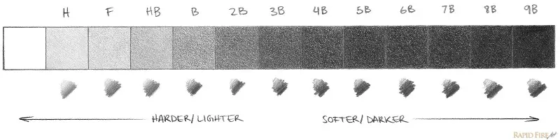
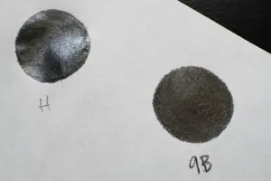
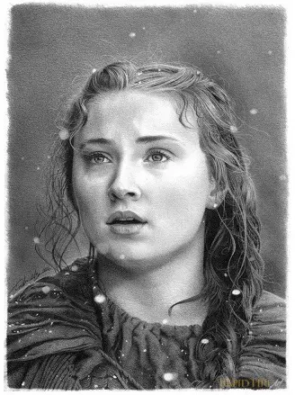
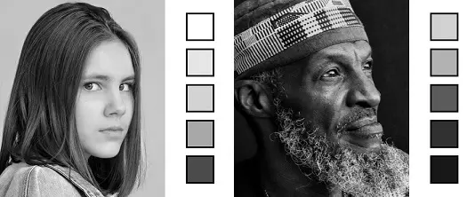

El sombreado es el proceso de aplicar distintos niveles de oscuridad para crear la ilusión de forma y profundidad. Además de practicar técnicas adecuadas de sombreado y combinación, una buena comprensión de la luz, los planos y los contornos es crucial para convertir un dibujo de líneas planas en un retrato realista que transmita la ilusión de forma y dé vida a su dibujo.
Para lograr un dibujo realista es necesario trabajar con una gama de valores amplia. Los lápices duros (H) generan trazos finos y nítidos, ideales para bocetos técnicos, pero difíciles de difuminar y pueden dejar marcas profundas. Los lápices blandos (B) producen líneas oscuras y suaves, fáciles de difuminar, por lo que son los más recomendados para retratos y sombreados. No es necesario tener toda la escala (9H a 9B); lo más usado en retratos son HB, 4B, 6B y 8B.
Los mejores lápices para sombrear debe estar libres de impurezas.
Puedes saber qué tan duro o blando es un lápiz observando la combinación de letras y números impresos en el extremo de cada lápiz.
Negro: Con lápices de grafito no se consigue un negro intenso. Sin embargo, sí se puede lograr con carboncillo. De hecho, se usan mucho juntos con resultados increíbles.
Blanco: Quizás hayas visto a artistas usar corrector líquido (corrector líquido), pintura o lápiz de color blanco para resaltar las luces en sus dibujos. Esto le da al dibujo un aspecto muy impactante y puede aumentar el realismo.
El lápiz HB es útil para contornos y sombras claras, pero no es suficiente para retratos realistas. Al intentar oscurecer con él, se requiere mucha presión, lo que puede dañar el papel, dificultar el borrado y afectar la calidad del dibujo.
A continuación se muestra un ejemplo exagerado en papel fino para bocetos.
Si solo usarás un lápiz, lo ideal es elegir un 2B, 3B o 4B. El 2B es mejor para trazos ligeros y el 4B ofrece mayor versatilidad; este último suele ser la mejor opción.
Al sombrear con una variedad de grados de lápiz, cada lápiz solo debe cubrir un pequeño rango de valores.
Para el dibujo a continuación,utilicé HB,4B Y 6B.
Usar varios grados de lápiz facilita obtener tonos claros y oscuros sin esfuerzo. Para elegir los más adecuados en un retrato, conviene crear una escala de valores con tus propios lápices y compararla con la referencia, ya que la gama necesaria varía según la iluminación y el tono de piel del modelo.
En un retrato, se pueden combinar distintos lápices según la zona. Para un rostro sencillo: HB en contornos y ojos claros, 4B en la cara y 6B en pupilas. En uno más complejo: HB para contornos y reflejos, 4B y 5B para capas iniciales y sombras suaves, 6B para detalles y 9B para las sombras más oscuras.
A continuación se presentan algunas técnicas de sombreado con lápiz para retratos tanto para principiantes como para artistas experimentados.
La técnica de sombreado con líneas en la misma dirección permite controlar el valor con la presión o el tipo de lápiz. Es rápida, eficiente y facilita la difuminación al inclinar el lápiz para obtener trazos más precisos y uniformes.
La técnica del rayado cruzado consiste en superponer líneas que provienen de múltiples direcciones. Utilizo esta técnica para transmitir pieles arrugadas o muy texturizadas, así como algunos tipos de tejidos.
El circulismo consiste en superponer pequeños círculos para crear tonos y texturas realistas en la piel. Con punta afilada se logran arrugas finas, y con trazos más romos se obtiene una piel lisa y suave, aunque requiere mucha paciencia.